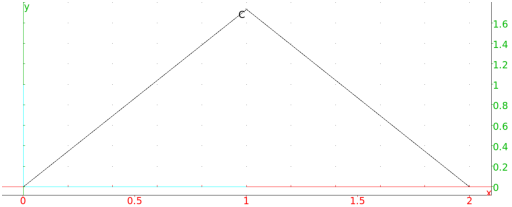

13.8.4 Equilateral triangles in the plane: equilateral_triangle
See Section 14.7.4 for equilateral triangles in space.
The equilateral_triangle command creates equilateral
triangles.
-
equilateral_triangle takes two mandatory arguments
and one optional argument:
-
A,B, two points.
- Optionally, var, a variable name.
- equilateral_triangle(A,B ⟨var⟩)
returns and draws the equilateral ABC, where AB to AC is
counterclockwise.
With the argument var, C will be assigned to
var.
Examples
-
Input:
equilateral_triangle(0,2)
Output:
- Input:
equilateral_triangle(0, 2, C)
Output:

Input:
affix(C)
Output: